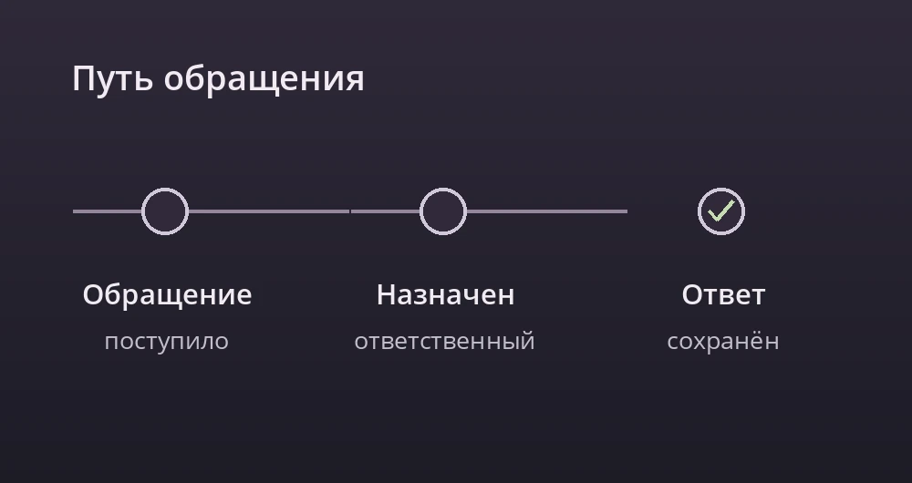

Работа с обращениями
Схема обработки обращения · Показ по договорённости
В очереди можно назначить ответственного, получить сводку и ответить на конкретное обращение. После ответа меняется статус.
При проверке назначения и ответа роли выполнял один человек. Подключение источника обращений для вашей команды входит в обсуждение задачи.

